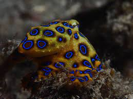
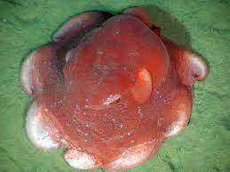
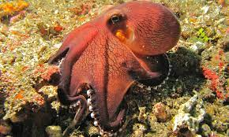

Welcome throughout this website we will be talking about three various types of octopuses. (Yes yes I know y'all are going to be like "it's octopods" they are both technically correct and I like octopuses more so that is how I'm going to say it) The types of octopuses I will be talking about are the Blue-Ringed Octpus, the Flap Jack Octopus, and last but not least the Coconut octopus.
| Species: | Blue-Ringed Octopus | Flap Jack Octopus | Coconut Octopus |
|---|---|---|---|
| Image: |  |  |  |
| Scientific Name: | Hapalochlaena | Opisthoteuthis Californiana | Amphioctopus Marginatus |
| Description: | Dark yellow body, with 5 millimeter blue rings. | 20 cm body, with a spongy reg, orange, or pinkish colaration has fins the shape of ears on its head. | 3 inches long with 6 inches of tentacles, with light colored suckers onrasting the dark redish body. |
| Habitat: | Sea of japan to southern Australia right around 50 meters below sea level. | Northern and northeastern pacific ocean. At about 200 meters below sea level. | Western Pacific ocean. At about 190 meters below sea level. |
| Diet: | Small crabs, shrimp, and small fish | Small crustaceans, and small shrimp | Shrimp, crabs, and clams |
| Lifespan: | 2 years | 1.4 - 2.6 years | 3-5 years |
| Special Trait: | They are the most deadly(venomous) cephalopods, could kill 26 adult humans and their is no antivenom. | They can flatten out their body to look like a flapjack to avoid predators | The brain to body ratio of this octopus is similar to birds and mammals, is the only invertebrate with this. |
Now that you know the a little more information about those specific octopuses, there are some common atributes across all octopuses that you should know. Octopuses do not have bones, meaning that where ever their brain fits, they fit, this allows them to be excellent hiders. They also have eight tenticles most with the iconic suckers, and if they lose one in say a wicked battle to the death, it does grow back after about 100 to 130 days. A final thing that is absolutely crucial for you to know is that octopuses have three hearts, one for tenticle blood flow, one for brain blood flow, and one for blood flow to all the organs. For some further information about octopuses in general here is a website that will tell you all you want to know:
Learn about octopuses!!!